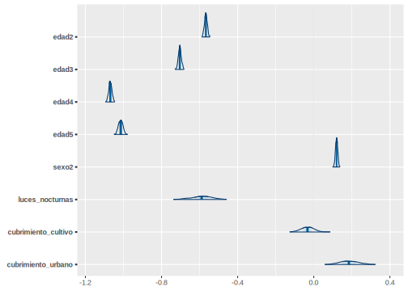
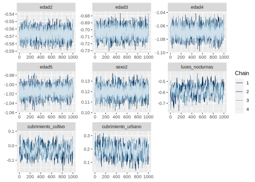

10.2 Proceso de estimación en R
Para desarrollar la metodología se hace uso de las siguientes librerías.
# Interprete de STAN en R
library(rstan)
library(rstanarm)
# Manejo de bases de datos.
library(tidyverse)
# Gráficas de los modelos.
library(bayesplot)
library(patchwork)
# Organizar la presentación de las tablas
library(kableExtra)
library(printr)Un conjunto de funciones desarrolladas para realizar de forma simplificada los procesos están consignadas en la siguiente rutina.
source("Recursos/Día3/Sesion3/0Recursos/funciones_mrp.R")Entre las funciones incluidas en el archivo encuentra
plot_interaction: Esta crea un diagrama de lineas donde se estudia la interacción entre las variables, en el caso de presentar un traslape de las lineas se recomienda incluir el interacción en el modelo.
Plot_Compare Puesto que es necesario realizar una homologar la información del censo y la encuesta es conveniente llevar a cabo una validación de las variables que han sido homologadas, por tanto, se espera que las proporciones resultantes del censo y la encuesta estén cercanas entre sí.
Aux_Agregado: Esta es función permite obtener estimaciones a diferentes niveles de agregación, toma mucha relevancia cuando se realiza un proceso repetitivo.
Las funciones están diseñada específicamente para este proceso
10.2.1 Encuesta de hogares
Los datos empleados en esta ocasión corresponden a la ultima encuesta de hogares, la cual ha sido estandarizada por CEPAL y se encuentra disponible en BADEHOG
encuesta <- readRDS("Recursos/Día3/Sesion3/Data/encuestaCOL18N1.rds")
encuesta_mrp <- encuesta %>%
transmute(
dam = dam_ee,
dam2,
area = haven::as_factor(area_ee,levels = "values"),
area = case_when(area == 1 ~ "1", TRUE ~ "0"),
pobreza = ifelse(ingcorte < lp,1,0),
sexo = as.character(sexo),
anoest = case_when(
edad < 7 | anoest == -1 ~ "98" , #No aplica
anoest == 99 | (edad>=7 & is.na(anoest)) ~ "99", #NS/NR
anoest == 0 ~ "1", # Sin educacion
anoest %in% c(1:6) ~ "2", # 1 - 6
anoest %in% c(7:12) ~ "3", # 7 - 12
anoest > 12 ~ "4", # mas de 12
TRUE ~ "Error" ),
edad = case_when(
edad < 15 ~ "1",
edad < 30 ~ "2",
edad < 45 ~ "3",
edad < 65 ~ "4",
TRUE ~ "5"),
etnia = case_when(
etnia_ee == 1 ~ "1", # Indigena
etnia_ee == 2 ~ "2", # Afro
TRUE ~ "3" # Otra
),
fep = `_fep`
)
tba(encuesta_mrp %>% head(10)) | dam | dam2 | area | pobreza | sexo | anoest | edad | etnia | fep |
|---|---|---|---|---|---|---|---|---|
| 05 | 05360 | 1 | 0 | 1 | 3 | 3 | 2 | 127.2220 |
| 05 | 05360 | 1 | 0 | 2 | 2 | 3 | 3 | 127.2220 |
| 05 | 05360 | 1 | 0 | 1 | 2 | 1 | 2 | 127.2220 |
| 05 | 05360 | 1 | 0 | 1 | 98 | 1 | 2 | 127.2220 |
| 05 | 05360 | 1 | 0 | 1 | 98 | 1 | 2 | 127.2220 |
| 05 | 05360 | 1 | 1 | 1 | 4 | 3 | 2 | 125.7202 |
| 05 | 05360 | 1 | 1 | 2 | 3 | 3 | 2 | 125.7202 |
| 05 | 05360 | 1 | 1 | 2 | 2 | 1 | 2 | 125.7202 |
| 05 | 05360 | 1 | 1 | 1 | 98 | 1 | 2 | 125.7202 |
| 05 | 05360 | 1 | 1 | 1 | 2 | 4 | 2 | 115.8661 |
La base de datos de la encuesta tiene la siguientes columnas:
dam: Corresponde al código asignado a la división administrativa mayor del país.
dam2: Corresponde al código asignado a la segunda división administrativa del país.
lp y li lineas de pobreza y pobreza extrema definidas por CEPAL.
área división geográfica (Urbano y Rural).
sexo Hombre y Mujer.
etnia En estas variable se definen tres grupos: afrodescendientes, indígenas y Otros.
Años de escolaridad (anoest)
Rangos de edad (edad)
Factor de expansión por persona (fep)
Ahora, inspeccionamos el comportamiento de la variable de interés:
tab <- encuesta_mrp %>% group_by(pobreza) %>%
tally() %>%
mutate(prop = round(n/sum(n),2),
pobreza = ifelse(pobreza == 1, "Si", "No"))
ggplot(data = tab, aes(x = pobreza, y = prop)) +
geom_bar(stat = "identity") +
labs(y = "", x = "") +
geom_text(aes(label = paste(prop*100,"%")),
nudge_y=0.05) +
theme_bw(base_size = 20) +
theme(axis.text.y = element_blank(),
axis.ticks = element_blank())Figura 10.1: Proporción de personas por debajo de la linea de pobreza
La información auxiliar disponible ha sido extraída del censo e imágenes satelitales
statelevel_predictors_df <-
readRDS("Recursos/Día3/Sesion3/Data/statelevel_predictors_df_dam2.rds") %>%
mutate_at(.vars = c("luces_nocturnas",
"cubrimiento_cultivo",
"cubrimiento_urbano",
"modificacion_humana",
"accesibilidad_hospitales",
"accesibilidad_hosp_caminado"),
function(x) as.numeric(scale(x)))
tba(statelevel_predictors_df %>% head(10))| dam | dam2 | area1 | sexo2 | edad2 | edad3 | edad4 | edad5 | etnia2 | anoest2 | anoest3 | anoest4 | etnia1 | tiene_acueducto | piso_tierra | alfabeta | hacinamiento | tasa_desocupacion | luces_nocturnas | cubrimiento_cultivo | cubrimiento_urbano | modificacion_humana | accesibilidad_hospitales | accesibilidad_hosp_caminado |
|---|---|---|---|---|---|---|---|---|---|---|---|---|---|---|---|---|---|---|---|---|---|---|---|
| 05 | 05001 | 0.9832 | 0.5299 | 0.2671 | 0.2201 | 0.2355 | 0.1060 | 0.0251 | 0.2598 | 0.4048 | 0.2287 | 0.0009 | 0.0354 | 0.0024 | 0.0258 | 0.0833 | 0.0062 | 4.9762 | -0.5072 | 7.2903 | 2.8648 | -0.3953 | -0.5248 |
| 05 | 05002 | 0.3953 | 0.4807 | 0.2229 | 0.1977 | 0.2497 | 0.1281 | 0.0035 | 0.5644 | 0.2393 | 0.0473 | 0.0001 | 0.3416 | 0.0160 | 0.1139 | 0.1395 | 0.0000 | -0.3246 | -0.5749 | -0.1807 | -0.0439 | -0.3439 | -0.4224 |
| 05 | 05004 | 0.3279 | 0.4576 | 0.2376 | 0.2075 | 0.2316 | 0.1218 | 0.0199 | 0.4470 | 0.3460 | 0.0723 | 0.0000 | 0.3694 | 0.0325 | 0.0787 | 0.1557 | 0.0000 | -0.6111 | -0.5475 | -0.2991 | -0.8159 | 0.0619 | -0.0654 |
| 05 | 05021 | 0.5770 | 0.5020 | 0.2191 | 0.1946 | 0.2357 | 0.1274 | 0.0031 | 0.5038 | 0.2727 | 0.0716 | 0.0000 | 0.2785 | 0.0255 | 0.0959 | 0.1025 | 0.0000 | -0.4532 | -0.6694 | -0.1852 | -0.3570 | -0.2956 | -0.3104 |
| 05 | 05030 | 0.4859 | 0.5063 | 0.2571 | 0.2047 | 0.2507 | 0.0997 | 0.0048 | 0.4130 | 0.3756 | 0.0828 | 0.0003 | 0.0775 | 0.0143 | 0.0844 | 0.1176 | 0.0000 | 1.1636 | -0.5002 | 0.7336 | 1.4706 | -0.3670 | -0.4265 |
| 05 | 05031 | 0.5766 | 0.4978 | 0.2695 | 0.1961 | 0.2047 | 0.0850 | 0.0050 | 0.4618 | 0.2981 | 0.0585 | 0.0001 | 0.4010 | 0.0970 | 0.1200 | 0.1417 | 0.0000 | -0.5077 | -0.6806 | -0.2532 | -0.6818 | 0.0167 | 0.2017 |
| 05 | 05034 | 0.5029 | 0.4815 | 0.2530 | 0.2052 | 0.2324 | 0.1042 | 0.0060 | 0.4731 | 0.2976 | 0.0634 | 0.0065 | 0.3435 | 0.0069 | 0.1089 | 0.1301 | 0.0000 | -0.2580 | -0.5573 | -0.2197 | 0.2265 | -0.0293 | -0.2376 |
| 05 | 05036 | 0.3931 | 0.4951 | 0.2447 | 0.1955 | 0.2435 | 0.1142 | 0.0054 | 0.4808 | 0.3010 | 0.0591 | 0.0006 | 0.1341 | 0.0227 | 0.1100 | 0.1561 | 0.0000 | 0.7139 | -0.5957 | -0.2053 | 1.0807 | -0.3818 | -0.5131 |
| 05 | 05038 | 0.2256 | 0.4927 | 0.2659 | 0.1984 | 0.2049 | 0.0904 | 0.0050 | 0.5162 | 0.2696 | 0.0281 | 0.0000 | 0.2768 | 0.1011 | 0.1544 | 0.2247 | 0.0000 | -0.4100 | -0.5108 | -0.2644 | -0.1709 | -0.3398 | -0.3666 |
| 05 | 05040 | 0.4858 | 0.4826 | 0.2859 | 0.1982 | 0.1678 | 0.0641 | 0.0168 | 0.4928 | 0.2738 | 0.0361 | 0.0117 | 0.4961 | 0.0824 | 0.1253 | 0.1948 | 0.0000 | -0.5447 | -0.6866 | -0.2954 | -0.9040 | 0.0470 | 0.1783 |
10.2.2 Niveles de agregación para colapsar la encuesta
Después de realizar una investigación en la literatura especializada y realizar estudios de simulación fue posible evidenciar que las predicciones obtenidas con la muestra sin agregar y la muestra agregada convergen a la media del dominio.
byAgrega <- c("dam", "dam2", "area",
"sexo", "anoest", "edad", "etnia" )10.2.3 Creando base con la encuesta agregada
El resultado de agregar la base de dato se muestra a continuación:
encuesta_df_agg <-
encuesta_mrp %>% # Encuesta
group_by_at(all_of(byAgrega)) %>% # Agrupar por el listado de variables
summarise(n = n(), # Número de observaciones
# conteo de personas con características similares.
pobreza = sum(pobreza),
no_pobreza = n-pobreza,
.groups = "drop") %>%
arrange(desc(pobreza)) # Ordenar la base.La tabla obtenida es la siguiente:
| dam | dam2 | area | sexo | anoest | edad | etnia | n | pobreza | no_pobreza |
|---|---|---|---|---|---|---|---|---|---|
| 47 | 47001 | 1 | 2 | 3 | 2 | 3 | 2636 | 1048 | 1588 |
| 27 | 27001 | 1 | 2 | 3 | 2 | 2 | 1824 | 993 | 831 |
| 20 | 20001 | 1 | 2 | 3 | 2 | 3 | 2211 | 953 | 1258 |
| 23 | 23001 | 1 | 2 | 3 | 2 | 3 | 2530 | 909 | 1621 |
| 47 | 47001 | 1 | 1 | 3 | 2 | 3 | 2550 | 870 | 1680 |
| 44 | 44001 | 1 | 1 | 98 | 1 | 3 | 1605 | 848 | 757 |
| 44 | 44001 | 1 | 2 | 3 | 2 | 3 | 1636 | 840 | 796 |
| 47 | 47001 | 1 | 1 | 98 | 1 | 3 | 1702 | 830 | 872 |
| 70 | 70001 | 1 | 2 | 3 | 2 | 3 | 2023 | 825 | 1198 |
| 18 | 18001 | 1 | 2 | 3 | 2 | 3 | 1904 | 820 | 1084 |
El paso a seguir es unificar las tablas creadas.
encuesta_df_agg <- inner_join(encuesta_df_agg, statelevel_predictors_df)10.2.4 Definiendo el modelo multinivel.
Después de haber ordenado la encuesta, podemos pasar a la definición del modelo.
options(mc.cores = parallel::detectCores()) # Permite procesar en paralelo.
fit <- stan_glmer(
cbind(pobreza, no_pobreza) ~
(1 | dam2) + # Efecto aleatorio (ud)
edad + # Efecto fijo (Variables X)
sexo +
tasa_desocupacion +
luces_nocturnas +
cubrimiento_cultivo +
cubrimiento_urbano ,
data = encuesta_df_agg, # Encuesta agregada
verbose = TRUE, # Muestre el avance del proceso
chains = 4, # Número de cadenas.
iter = 100, # Número de realizaciones de la cadena
cores = 4,
family = binomial(link = "logit")
)
saveRDS(fit, file = "Recursos/Día3/Sesion3/Data/fit_pobreza.rds")Después de esperar un tiempo prudente se obtiene el siguiente modelo.
fit <- readRDS("Recursos/Día3/Sesion3/Data/fit_pobreza2.rds")Validación del modelo
library(posterior)
library(bayesplot)
var_names <- c("edad2", "edad3", "edad4", "edad5", "sexo2",
"luces_nocturnas", "cubrimiento_cultivo","cubrimiento_urbano")
mcmc_areas(fit,pars = var_names)
mcmc_trace(fit,pars = var_names)
encuesta_mrp2 <- inner_join(encuesta_mrp %>% filter(), statelevel_predictors_df)
y_pred_B <- posterior_epred(fit, newdata = encuesta_mrp2)
rowsrandom <- sample(nrow(y_pred_B), 100)
y_pred2 <- y_pred_B[rowsrandom, ]
ppc_dens_overlay(y = as.numeric(encuesta_mrp2$pobreza), y_pred2) 
Figura 10.2: Tasa de pobreza por dam2
Los coeficientes del modelo para las primeras dam2 son:
| (Intercept) | edad2 | edad3 | edad4 | edad5 | sexo2 | tasa_desocupacion | luces_nocturnas | cubrimiento_cultivo | cubrimiento_urbano | |
|---|---|---|---|---|---|---|---|---|---|---|
| 05001 | 0.6828 | -0.5671 | -0.7038 | -1.0693 | -1.0142 | 0.12 | -47.2389 | -0.5892 | -0.033 | 0.1844 |
| 05002 | 0.0681 | -0.5671 | -0.7038 | -1.0693 | -1.0142 | 0.12 | -47.2389 | -0.5892 | -0.033 | 0.1844 |
| 05031 | -0.3101 | -0.5671 | -0.7038 | -1.0693 | -1.0142 | 0.12 | -47.2389 | -0.5892 | -0.033 | 0.1844 |
| 05034 | 0.1841 | -0.5671 | -0.7038 | -1.0693 | -1.0142 | 0.12 | -47.2389 | -0.5892 | -0.033 | 0.1844 |
| 05045 | -0.6516 | -0.5671 | -0.7038 | -1.0693 | -1.0142 | 0.12 | -47.2389 | -0.5892 | -0.033 | 0.1844 |
| 05079 | 0.6482 | -0.5671 | -0.7038 | -1.0693 | -1.0142 | 0.12 | -47.2389 | -0.5892 | -0.033 | 0.1844 |
| 05088 | 0.2210 | -0.5671 | -0.7038 | -1.0693 | -1.0142 | 0.12 | -47.2389 | -0.5892 | -0.033 | 0.1844 |
| 05093 | -0.5751 | -0.5671 | -0.7038 | -1.0693 | -1.0142 | 0.12 | -47.2389 | -0.5892 | -0.033 | 0.1844 |
| 05120 | 0.9444 | -0.5671 | -0.7038 | -1.0693 | -1.0142 | 0.12 | -47.2389 | -0.5892 | -0.033 | 0.1844 |
| 05129 | -0.6751 | -0.5671 | -0.7038 | -1.0693 | -1.0142 | 0.12 | -47.2389 | -0.5892 | -0.033 | 0.1844 |